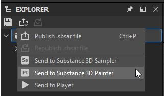
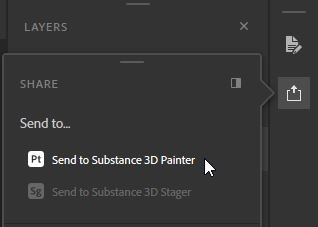

Starting with the 7.2.0 release, you can also receive and update assets sent from Designer and Sampler via the Send to feature. As you need to be able to access Sampler and Designer for this, this feature is only available if you are using Painter via Substance 3D Texturing or Substance 3D Collection.
Once the asset is sent, it will appear in Painter's Assets panel, imported to the default library location on disk. You can also update sent assets if you have made any changes in Designer or Sampler within the same session (as long as neither of the apps had been closed).

